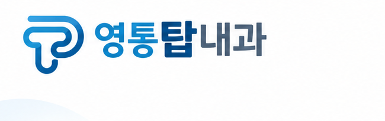
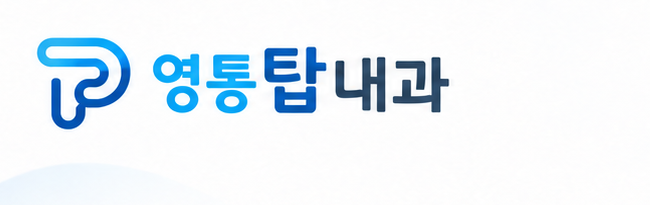
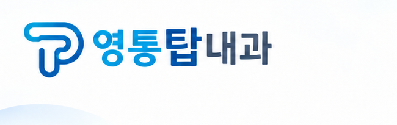
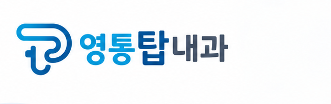
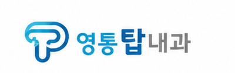

영통탑내과 이미지 로고 오류 검토표
이 문서는 수정 전 상태의 검토 기록입니다. 이후 원본 로고를 합성하여 수정했습니다. 현재 수정 결과와 검증 보기
검토일 2026년 10월 1일. 현재 연결된 재제작 PNG 17개 모두 원본 로고와 다릅니다. 추가로 기존 탭 아이콘 1개가 원본과 다른 도형을 사용하며, 보관된 이전 생성 PNG 4개에도 같은 종류의 변형이 있습니다. 현재 PNG 17개는 15개 페이지에서 사용됩니다.
비교 기준인 원본 병원 로고
저장소에 보관된 기존 홈페이지 로고를 기준으로 대조했습니다. 원본은 회색 이중 원형 청진기 머리·회색 상단 선·하늘색과 파란색 연결 심볼, 하늘색 ‘영통’·진한 파란색 ‘탑’·회색 ‘내과 의원’, 하단 영문 병원명으로 구성됩니다.

원본 출처 기록: 기존 병원 홈페이지 · 기록된 원본 CDN 파일 · 자산 출처 원장. 이번 원사이트·CDN 재접속은 HTTP 403으로 제한되어 로컬 보관본을 사용했습니다. 흰 배경의 확대 이미지는 비교용이며 로고 원본 파일을 변경하지 않았습니다.

현재 사용 중인 이미지 17개
아래 표는 심볼 변형을 파일별로 구분합니다. 공통으로 ‘의원’ 표기와 하단 영문 병원명이 빠졌고, 글꼴·자간·글자 비례도 원본과 다릅니다. 별도 승인된 간략형 로고 자료는 확인되지 않았습니다. 확대 영역은 각 파일의 일부를 잘라낸 검토용 이미지입니다.
배너 12개 로고 비교 모음안내도와 일정표 5개 로고 비교 모음


| 번호 | 이미지와 파일 | 사용 페이지와 이미지 내 위치 | 원본과 다른 부분 | 실제 로고 영역 |
|---|---|---|---|---|
| 1 | 심장질환 배너 banner-heart-hq-original.png 생성 마스터 | /conditions/heart-disease/왼쪽 위 | 청진기 머리인 회색 이중 원을 없애고 상단 선만 남겼습니다. 회색 상단 선도 파란색으로 바뀌었고, 아래쪽 굽은 선의 길이와 비례가 달라졌습니다. |  |
| 2 | 소화기질환 배너 banner-digestive-hq-original.png 생성 마스터 | /conditions/digestive/왼쪽 위 | 회색 이중 원을 청록색 단일 고리로 바꿨습니다. 상단 회색 선이 파란색이 되었고, 원과 선의 접합부·심볼 윤곽이 달라졌습니다. | |
| 3 | 호흡기·감염질환 배너 banner-respiratory-hq-original.png 생성 마스터 | /conditions/respiratory-infections/왼쪽 위 | 회색 이중 원을 단일 고리로 단순화했습니다. 상단 선이 회색에서 남색으로 이어지며, 심볼의 선 굵기·곡률·글자 비례가 원본과 다릅니다. | |
| 4 | 성인 예방접종 배너 banner-vaccinations-hq-original.png 생성 마스터 | /services/vaccinations/왼쪽 위 | 청진기 머리와 별도의 회색 상단 선이 사라졌습니다. 상단과 오른쪽을 하나의 파란색 굽은 선으로 다시 그려 원본과 다른 심볼이 되었습니다. |  |
| 5 | 만성질환 배너 banner-chronic-hq-original.png 생성 마스터 | /conditions/chronic-disease/왼쪽 위 | 청진기 머리인 원이 사라지고, 회색 상단 선이 파란색 열린 곡선으로 바뀌었습니다. 심볼의 비례와 끝부분도 달라졌습니다. | |
| 6 | 갑상선·경동맥·경부 멍울 배너 banner-neck-hq-original.png 생성 마스터 | /conditions/thyroid-carotid-neck/왼쪽 위 | 회색 이중 원을 단일 고리로 단순화하고 회색 상단 선을 청록·파란색으로 바꿨습니다. 원의 크기·곡선·심볼과 글자 사이 비례도 다릅니다. | |
| 7 | 신장질환 배너 banner-kidney-hq-original.png 생성 마스터 | /conditions/kidney/왼쪽 위 | 회색 이중 원을 파란 고리와 회색 일부가 섞인 원으로 바꿨습니다. 심볼 내부 선의 접합부와 색 경계·굴곡이 원본과 다릅니다. | |
| 8 | 암 치료 중 지지치료 배너 banner-cancer-support-hq-original.png 생성 마스터 | /services/cancer-support/왼쪽 위 | 회색 이중 원을 속이 채워진 진한 파란 점으로 바꿨습니다. 상단 회색 선도 파란색으로 바뀌었고, 병원명 중 내과가 회색 대신 남색 계열로 표현되었습니다. | |
| 9 | 검사·시술 배너 banner-services-hq-original.png 생성 마스터 | /services/왼쪽 위 | 청진기 머리와 별도의 회색 상단 선이 사라졌습니다. 심볼의 윗부분과 오른쪽을 파란색 한 줄로 다시 연결해 원본의 선 구조를 바꿨습니다. |  |
| 10 | 건강검진·서류안내 배너 banner-checkups-hq-original.png 생성 마스터 | /checkups/왼쪽 위 | 회색 이중 원을 남색 단일 고리로 바꿨습니다. 회색 상단 선과 회색 내과 글자가 파란·남색으로 바뀌고 선 굵기와 글자 비례도 달라졌습니다. | |
| 11 | 증상백과 배너 banner-symptoms-hq-original.png 생성 마스터 | /symptoms/왼쪽 위 | 회색 이중 원 자리에 파란 원 안의 흰 십자를 넣었습니다. 원본에 없는 십자를 추가했으며 상단 선도 파란색으로 바뀌었습니다. | |
| 12 | 질환백과 배너 banner-diseases-hq-original.png 생성 마스터 | /diseases/왼쪽 위 | 청진기 머리와 회색 상단 선이 사라졌습니다. 심볼 왼쪽 아래에 원본에 없는 짧은 돌출 획이 생기고, 선의 연결 구조와 비례도 달라졌습니다. |  |
| 13 | 심장검사 진행 순서 안내도 diagram-heart-flow-hq-original.png 생성 마스터 | /services/heart/상단 중앙 | 회색 이중 원을 속이 채워진 하늘색 점으로 바꿨습니다. 상단 회색 선을 청록·파란색으로 바꾸고 심볼의 곡선과 글자 비례도 다시 그렸습니다. | |
| 14 | 위·대장내시경 검사 전 준비 안내도 diagram-endoscopy-preparation-hq-original.png 생성 마스터 | /services/endoscopy/상단 중앙 | 회색 이중 원을 안쪽 작은 원이 없는 단일 고리로 바꾸고 고리 일부에 청록색을 넣었습니다. T 형태 선에도 원본에 없는 청록색이 들어가며 윤곽과 글자 비례가 달라졌습니다. | |
| 15 | 조직검사·용종절제 후 주의사항 안내도 diagram-after-endoscopy-hq-original.png 생성 마스터 | /health/after-endoscopy/상단 중앙 | 청진기 머리와 회색 상단 선이 사라졌습니다. 심볼 왼쪽에 원본에 없는 짧은 가로 돌출 획을 추가하고, 선 구조와 색을 파란·청록색으로 다시 그렸습니다. | |
| 16 | 국가·채용·비자검진 진행 순서 안내도 diagram-checkup-flow-hq-original.png 생성 마스터 | /checkups/상단 중앙 | 청진기 머리와 회색 상단 선이 사라졌습니다. 심볼 왼쪽 선의 접합부에 불규칙한 돌기와 겹침이 생기고 전체 선의 연결 구조가 원본과 달라졌습니다. |  |
| 17 | 2026 성인 예방접종 일정표 vaccination-schedule-2026-hq-original.png 생성 마스터 | /services/vaccinations/상단 중앙 | 회색 이중 원을 파란 십자 모양으로 바꿨습니다. 원본에 없는 십자를 추가하고, 회색 상단 선과 하늘색 내부 선을 파란·청록색으로 바꿨습니다. |


각 파일은 assets/generated/redrawn-2026-09-29/의 생성 마스터, web/public/assets/clinic-visuals-hq/의 공개 파일, web/out/assets/clinic-visuals-hq/의 로컬 내보내기 파일이 SHA-256으로 같습니다. 즉 17개 디자인이 세 위치에 중복 보관되어 있으며, 51개의 서로 다른 오류 디자인이라는 의미가 아닙니다.
추가 브랜드 아이콘 불일치
| 파일 | 사용 위치 | 차이 | 실제 아이콘 |
|---|---|---|---|
| web/public/favicon.svg | 브라우저 탭·즐겨찾기, 한국어 및 다국어 페이지 공통 | 짙은 초록 사각형 안의 흰 T와 작은 연두 사각형. 원본 청진기 심볼의 선·색과 모두 다른 기존 별도 아이콘. 9월 29일 생성 PNG 17개와 별도로 집계. 별도 아이콘으로 승인되었는지는 확인되지 않았습니다. |

보관된 이전 생성 이미지 4개
위치는 docs/plan-content-checklist-2026-09-29/accuracy-evidence/before/입니다. 현재 사용하는 17개와 합쳐 세지 않고, 과거 파일에 남은 오류로 별도 기록합니다.
| 이전 파일 | 로고 위치 | 차이 | 현재 사용 여부 |
|---|---|---|---|
| banner-chronic-hq-original.png | 왼쪽 위 | 청진기 머리와 회색 상단 선을 생략한 이전 생성본. | 과거 검수 전 파일. 현재 페이지에서 사용하지 않음. |
| banner-services-hq-original.png | 왼쪽 위 | 청진기 머리와 회색 상단 선을 생략한 이전 생성본. | 과거 검수 전 파일. 현재 페이지에서 사용하지 않음. |
| banner-vaccinations-hq-original.png | 왼쪽 위 | 청진기 머리와 회색 상단 선을 생략한 이전 생성본. | 과거 검수 전 파일. 현재 페이지에서 사용하지 않음. |
| vaccination-schedule-2026-hq-original.png | 상단 중앙 | 청진기 머리가 파란 십자로 대체되고 청록색이 추가된 이전 생성본. | 과거 검수 전 파일. 현재 페이지에서 사용하지 않음. |


전수 검토 범위와 나머지 판정
공개 이미지 56개, 제작·제공 이미지 34개, 보관된 이전 생성 이미지 4개를 목록화했습니다. 총 94개 파일이며 동일 바이트를 묶으면 77개입니다. 별도로 현재 오류 PNG 17개의 내보내기 복사본을 대조했습니다. 과거 브라우저 화면 캡처는 이미지 원본이 아닌 파생 검증 자료이므로 개별 수정 대상 이미지 수에서 제외했습니다.
| 이미지 그룹 | 파일 수 | 검토 결과 |
|---|---|---|
| 현재 공개 PNG | 17 | 모두 원본 로고 불일치. 각 전체 이미지와 로고 영역을 확인했습니다. |
| 해당 생성 마스터 | 17 | 공개 PNG와 바이트가 같아 동일 오류가 있습니다. |
| 보관된 이전 생성 PNG | 4 | 모두 로고 불일치. 위 별도 표에 기록했습니다. |
| 기존 WebP 배너·안내도·일정표 | 17 | 제공 모음판을 잘라낸 이미지입니다. 17개 모두 원본 영역과 디코딩 픽셀이 일치합니다. 회색 청진기 부분·의원·하단 영문 표기 등의 큰 구조는 남아 있습니다. 로고가 매우 작아 미세한 선·영문 철자의 완전 일치는 확정하지 않았습니다. 현재 페이지 연결은 PNG로 교체되어 있습니다. |
| 제공 모음판 JPG | 1 | 기존 WebP 17개의 출처. 낮은 해상도 때문에 로고 미세 정합성은 위와 같은 한계가 있습니다. |
| 초기 생성 배너 PNG | 12 | 전체 확인 결과 병원 로고가 들어 있지 않습니다. 일반 의료 삽화입니다. |
| 초기 안내도 PNG | 4 | 병원명은 안내 문구로 들어 있지만 그래픽 로고는 없습니다. |
| 질병관리청 자료 PNG | 16 | 병원 로고 없음. 질병관리청 등 원자료 기관의 로고는 병원 로고 오류에 포함하지 않습니다. |
| 기존 병원 로고 WebP | 1 | 이번 비교 기준. 출처 원장에 등록된 SHA-256과 실제 파일이 일치합니다. 공통 헤더가 이 파일을 사용합니다. |
| 병원 내부 사진 WebP | 2 | 실제 벽면 간판에 병원 로고가 있습니다. 기존 홈페이지에서 가져온 사진으로, 이번 생성 로고 오류와 같은 재그리기는 확인되지 않습니다. |
| 의료진 사진·실루엣 WebP | 2 | 교체 대상으로 볼 그래픽 병원 로고를 확인하지 못했습니다. |
| 탭 아이콘 SVG | 1 | 공식 로고와 다른 초록색 T 도형. 추가 브랜드 불일치로 별도 기록했습니다. |
오류가 들어간 단계와 후속 수정 대상
재제작 프롬프트가 원본 로고 파일의 정확한 합성 대신 simple blue clinic emblem과 영통탑내과 문구를 지정한 점이 재발 경로로 판단됩니다. 생성 마스터 자체에 이미 변형이 있고 공개·내보내기 복사본이 동일하므로, CSS나 PNG 복사 과정에서 생긴 변형은 아닙니다. 프롬프트 근거는 재제작 입력 기록에 있습니다. 이는 기록과 파일 비교에서 도출한 판단입니다.
수정할 때는 생성 그림 안의 브랜드 영역에 공식 로고 파일을 합성하는 방식이 적절합니다. 공개 PNG 17개와 마스터 17개를 함께 갱신하고 내보내기 파일을 다시 만들면 같은 오류가 재유입되는 것을 막을 수 있습니다. 이 검토에서는 이미지 수정·재생성·배포를 수행하지 않았습니다.